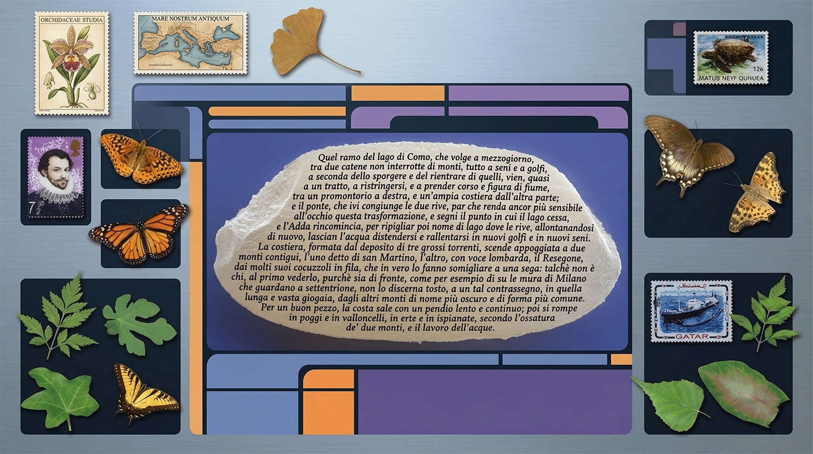

Microscrittura
Da: GM S. Buckh
Si eseguono lavori artigianali di microscrittura:
dalle iniziali al Decameron, su qualsiasi materiale:
dalla capocchia di spillo, alle ali di farfalla, dal francobollo al chicco di riso.

GM S. Buckh
Alloggio 09-B3105
USS Afrodite NCC-1863